|
|||
|
| • Mechanika » Kinematyka, Dynamika, Praca, moc, energia, Grawitacja, Ruch obrotowy, Statyka, Relatywistyka • Fizyka molekularna i ciepło » Termodynamika, Gazy, Ciecze, Ciała stałe • Elektryczność i magnetyzm » Elektrostatyka, Pole elektrostatyczne, Prąd elektryczny stały, Magnetyzm, Elektromagnetyzm • Zjawiska falowe » Ruch drgający i falowy, Akustyka, Drgania i fale elektromagnetyczne, Optyka • Elementy fizyki wpółczesnej » Dualizm korpuskularno-falowy, Fizyka atomowa, Fizyka jądrowa • Astronomia » Astronomia • Zagadnienia matematyczne » Wektory, Pochodna funkcji, Logarytmy • Tablice » Jednostki wielkości fizycznych, Właściwości fizyczne, Właściwości elektromagnetyczne i falowe, Stałe fizyczne, Tablice matematyczne • O stronie » Autorzy, Bibliografia | |
|
Zjawisko równowagi
Równowagą nazywamy zjawisko, w którym działanie jednej siły jest równoważone przez działanie drugiej siły, ciała, na które działają te siły pozostaje w spoczynku. Dział mechaniki zajmujący się badaniem równowagi ciał nazywamy statyką. Dla uproszczenia opisu zjawisk w statyce pomija się odkształcenia ciała pod wpływem działania sił, wprowadzając pojęcie ciała sztywnego. Ważną rolę w zjawisku równowagi odgrywają siły. Rozważmy dwa przypadki, w których działają siły wzajemnie się równoważące. 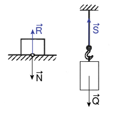
Jak już zostało w dziale dynamika stwierdzono siła jest wektorem, który charakteryzują następujące cechy: wielkość, kierunek działania, zwrot, punkt przyłożenia. Wielkość siły jest to jej wartość liczbowa podawana zwykle w niutonach. Może być także wyrażona graficznie przez długość odcinka przedstawiającego wektor siły. Kierunek działania siły określa się liczbowo przez podanie wartości kąta, jaki tworzy ona z pewnym kierunkiem umownym (najczęściej z kierunkiem poziomym ze zwrotem w prawo). Graficznie natomiast przedstawia się w postaci prostej odpowiednio skierowanej w płaszczyźnie rysunku, którą nazywamy linią działania. Zwrot siły jest określany liczbowo wartością kąta, jaki tworzy ona z kierunkiem umownym albo graficznie strzałką na końcu wyobrażającego ja odcinka. Punkt przyłożenia siły określa się liczbowo przez podanie jego współrzędnych w przyjętym układzie współrzędnych lub graficznie przez odpowiednie umiejscowienie na rysunku początku wyobrażającego ją odcinka ze strzałką. Składanie sił
Spróbujmy ustalić wypadkową pięciu sił przyłożonych w jednym punkcie i działających w jednej płaszczyźnie: 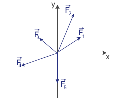 Możemy to zrobić następująco: dodać pierwszą i drugą siłę i otrzymać ich wypadkową, następnie ta wypadkową składamy z trzecią siłą. Otrzymujemy wówczas wypadkową pierwszej, drugiej i trzeciej siły. Postępujemy analogicznie, otrzymujemy wypadkową czterech sił, a w końcu pięciu sił. 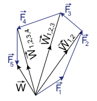 Możemy jednak wykonać to zadanie w prostszy sposób, przy pomocy metody wieloboku. Mianowicie kreśląc z dowolnego punktu odcinek skierowany, wyobrażający pierwszą siłę, następnie z jego końca odcinek wyobrażający drugi odcinek, itd. Łącząc początek pierwszej siły z końcem ostatniej otrzymujemy siłę wypadkową. 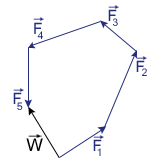
Powyższa reguła pozwala nam na składanie sił przyłożonych w różnych punktach i działających w jednej płaszczyźnie, gdyż po przesunięciu sił, możemy je złożyć np. metodą równoległoboku. 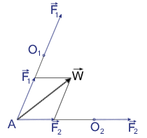 Trudniejszym natomiast do złożenia jest układ dwóch sił równoległych. Te siły nie można złożyć przez wyznaczenie przesunięcie ich i w ten sposób wyznaczyć wypadkową. Rozpatrzmy jednak układ dwóch sił równoległych i zgodnie skierowanych: 
Rysunek powyższy przedstawia sposób wyznaczenia wypadkowej dwóch sił równoległych. Zacznijmy jednak od początku. Siłę przesuwamy wzdłuż jej linii działania do punktu .Do sił i przykładamy siły: Trójkąt jest podobny do trójkąta utworzonego przez siły: , a więc: Trójkąt jest podobny do trójkąta utworzonego przez siły: , a więc: Lewe strony obydwu równań są takie same, a więc możemy zapisać, że: Linia działania wypadkowej dwóch sił równoległych zgodnie skierowanych dzieli odległość między tymi siłami na odcinki odwrotnie proporcjonalne do ich wielkości. W podobny sposób możemy wyznaczyć wypadkową dwóch sił równoległych przeciwnie skierowanych. Jest ona równa różnicy tych sił i jest skierowana tak, jak siła o większej wartości liczbowej. Przekształcając podaną wyżej proporcję, otrzymujemy: W równaniu tym występują iloczyny będące momentami sił i . Możemy więc na podstawie naszych rozważań wysnuć wnioski: Warunki równowagi
Warunek równowagi sił przyłożonych w jednym punkcie i działających w jednej płaszczyźnie
Oznacza to, że przy składaniu sił przyłożonych w jednym punkcie i działających w jednej płaszczyźnie metodą wieloboku sił, koniec ostatniej siły pokrywa się z początkiem siły pierwszej. Układ jest wtedy w równowadze. Warunki równowagi sił dowolnie rozłożonych w płaszczyźnie:
Para sił
Istnieją takie układy sił, które mimo, iż nie mają wypadkowej, nie są siłami równoważącymi. Przykładem takiego układu, zwanego parą sił, są dwie siły równoległe, ale przeciwnie skierowane. Obliczmy moment wypadkowy pary sił, złożonej z dwóch sił F (przeciwnie skierowanych), których linie działania są odległe o r. W tym celu należy wykonać sumę momentów tych sił względem dowolnego punktu O, odległego linii działania jednej z nich o x.
Maszyny proste
Maszynami prostymi nazywamy najprostsze narzędzia oraz części składowe mechanizmów, które służą do pokonywania dużych oporów za pomocą mniejszych sił o dogodnym kierunku ich działania. Dźwignią nazywamy ciało sztywne osadzone obrotowo na osi lub podparte. 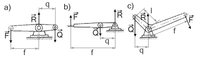 F - siła poruszająca Q - opór użyteczny R - reakcja osi Dźwignie dzielą się na dwustronne (rysunek a i c) oraz na jednostronne (rysunek b). Dźwignie dwustronne mają środek obrotu lub punkt podparcia pomiędzy siłą poruszającą a oporem użytecznym, natomiast w dźwigniach jednostronnych punkty przyłożenia tych sił leżą po tej samej stronie osi obrotu. f - ramię siły poruszającej q - ramię oporu użytecznego Ramię siły to odległość środka obrotu od linii działania, mierzone po prostopadłych. Wykorzystując równanie momentów sił względem osi obrotu: otrzymujemy zależność słuszną dla wszystkich odmian dźwigni: Krążek to okrągła tarcza, osadzona obrotowo na nieruchomej osi i zaopatrzona na obwodzie w rowek dla sznura, liny lub łańcucha. Krążek jest odmianą dźwigni. Wyróżniamy dwa rodzaje krążków:
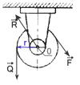 Z równania momentów sił względem osi obrotu O, mamy: Opór użyteczny jest równoważony przez siłę poruszającą, a więc za pomocą tego rodzaju krążka możemy jedynie zmienić na bardziej dogodny kierunek działania siły poruszającej. 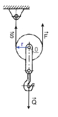 Jeden koniec liny, na której wisi krążek, jest przytwierdzony nieruchomo, na drugi działa zaś siła poruszająca. Ciężar jest zawieszony na haku i działa na oś krążka. W miarę wyciągania liny krążek obraca się i podnosi jednocześnie. Korzystając z równania momentów sił względem osi obrotu O, mamy: Siła poruszająca jest równa sile naciągu. Z wieloboku sił otrzymujemy: Podstawiając wyżej obliczoną równość, mamy: A więc ten rodzaj krążka umożliwia dwukrotne zmniejszenie siły użytecznej w stosunku do oporu użytecznego. Najczęściej jednak używa się połączenia krążka stałego z krążkiem przesuwnym, przedstawionego na rysunku poniżej: 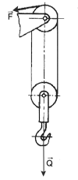 Kołowrotem nazywamy osadzony w łożyskach wał z umocowanym na nim kołem lub korbą. 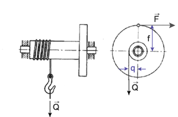 Równią pochyłą nazywamy płaszczyznę lub tor prostoliniowy nachylony do poziomu pod określonym kątem. Klin jest to graniastosłup trójkątny, którego dwie ściany boczne tworzą ze sobą niewielki kąt, zwany katem zbieżności, trzecia zaś stanowi grzbiet klina. Śrubą nazywamy maszynę prostą w postaci walca, zaopatrzonego w występ biegnący wokół jego powierzchni w postaci linii śrubowej i jest wkręcana w nakrętkę zaopatrzoną w odpowiedni rowek śrubowy. 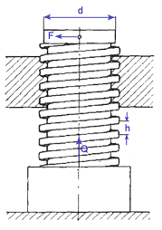 ZASADA ZACHOWANIA PRACY W MASZYNACH PROSTYCH
Środek ciężkości
Środek ciężkości to punkt, do którego jest przyłożona siła ciężkości. Środek ciężkości pokrywa się ze środkiem masy. 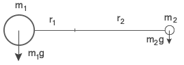 Środek masy to punkt, który spełnia warunek: . 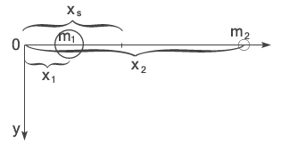 Położenie środka ciężkości zależy od kształtu ciała i rozmieszczenia w nim cząstek. Dla ciał jednorodnych o kształtach określonych geometrycznych można go wyznaczyć na podstawie ich symetrii geometrycznych:
Rodzaje równowagi
W zależności od położenia środka ciężkości wyróżniamy trzy rodzaje równowagi:
Stopień trwałości równowagi ciał podpartych jest tym większy, im większe jest rozstawienie punktów podparcia oraz im niższe jest położenie środka ciężkości, bowiem potrzebna jest wtedy odpowiednio duża praca do wytrącenia ciała ze stanu równowagi i obrócenia wokół punktu podparcia.
|
| Copyright © 2003- fizyka.kopernik.mielec.pl |